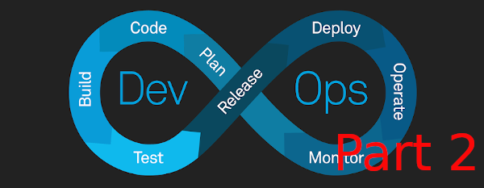

Further Improving the Developer Experience with Argo CD and GitHub Actions

Argo CD is a declarative, GitOps continuous delivery tool for Kubernetes. With Argo CD, you can define your application deployment as a code, store it in a Git repository and use Argo CD to keep the deployed application in sync with the state specified in the Git repository. Your GitHub repository is the source of truth for your application deployment. Argo CD continuously monitors your Git repository and automatically deploys your application whenever a change is detected. The flow looks like this:
---> Merge PR Request ---> Image Tag/Push to Registry Developer -------------------------> Argo Sync ---> Argo CD ---> Kubernetes Cluster
If that wasn't clear: the developer initiates both actions concurrently.
Prerequisites
Improving the Development Experience with Loft & DevSpace - Completion of this previous tutorial is the base for this Argo CD tutorial. The previous tutorial gets us acclimated with: Amazon Elastic Kubernetes Service, the AWS CLI, the eksctl tool, the kubectl command, Helm, DevSpace, and Docker.
First things first, let's create an ecr_deployer user we'll need for some GitHub repositories we'll create later. We'll do this now because we'll need to use the eks_admin account for the rest of this tutorial afterwards.
AWS_ACCOUNT_ID=$(aws sts get-caller-identity --query Account --output text)
aws iam create-user --user-name ecr-deployer
echo '{
"Version": "2012-10-17",
"Statement": [
{
"Effect": "Allow",
"Action": [
"ecr:*"
],
"Resource": "*"
}
]
}' >| ecr-policy.json
aws iam create-policy \
--policy-name ecr-policy \
--policy-document file://ecr-policy.json
aws iam attach-user-policy --user-name ecr-deployer --policy-arn arn:aws:iam::$AWS_ACCOUNT_ID:policy/ecr-policy
# THE following will create credentials for the ecr-deployer user we created in the previous step.
# We'll store these credentials in a file called `ecr-creds` for reference later.
echo "DEPLOYER_CREDS=$(aws iam create-access-key --user-name ecr-deployer --query 'AccessKey.{AccessKeyId:AccessKeyId,SecretAccessKey:SecretAccessKey}' --output text)" >| ecr-creds.sh
Building off the previous tutorial, we'll assume the eks-cluster-role for the eks-admin credentials. Both were created in the previous tutorial:
AWS_ACCOUNT_ID=$(aws sts get-caller-identity --query Account --output text)
TEMP_CREDS=$(aws sts assume-role \
--role-arn arn:aws:iam::$AWS_ACCOUNT_ID:role/eks-cluster-role \
--duration-seconds 3600 \
--role-session-name cluster-60-minute-session \
--profile eks-admin)
# REMINDER: these credentials will persist in your shell environment for the duration of the session
# You can unset them by running the following commands: unset AWS_ACCESS_KEY_ID AWS_SECRET_ACCESS_KEY AWS_SESSION_TOKEN.
# Otherwise, your default and other profiles will not work until you restart your shell.
export AWS_ACCESS_KEY_ID=$(echo $TEMP_CREDS | jq -r '.Credentials.AccessKeyId')
export AWS_SECRET_ACCESS_KEY=$(echo $TEMP_CREDS | jq -r '.Credentials.SecretAccessKey')
export AWS_SESSION_TOKEN=$(echo $TEMP_CREDS | jq -r '.Credentials.SessionToken')
Install Argo CD
We can install Argo CD using the Helm chart provided by the Argo CD team. Unlike how we worked with Loft in the last tutorial, we will expose to the Internet using a LoadBalancer service. This is because we will need to access Argo CD from our GitHub Actions workflow.
helm repo add argo https://argoproj.github.io/argo-helm
helm repo update
aws eks update-kubeconfig --name development
# Using our root accout's profile we'll need to set the eks-admin credentials to create an IAM identity mapping for the eks-cluster-role
eksctl create iamidentitymapping \
--cluster development \
--arn arn:aws:iam::$AWS_ACCOUNT_ID:role/eks-cluster-role \
--username eks-admin \
--group system:masters \
--region us-east-2 \
--profile default
kubectl create namespace argo-cd # create namespace in cluster
helm install argo-cd argo/argo-cd --namespace argo-cd --set server.service.type=LoadBalancer
ARGO_SERVER=$(kubectl get service argo-cd-argocd-server -o jsonpath='{.status.loadBalancer.ingress[0].hostname}' --namespace argo-cd)
Now that we've installed Argo CD in the argo-cd namespace, we can access the Argo CD UI at whatever is stored in the ARGOCD_SERVER environment variable. The default username and password is admin, but to get the default password, you'll need to execute the following:
ARGO_PASSWORD=$(kubectl get secret argocd-initial-admin-secret -o jsonpath="{.data.password}" --namespace argo-cd | base64 -d)
For this tutorial, I suggest you change the default password at $ARGOCD_SERVER/user-info?changePassword=true. Afterwards, set the ARGO_PASSWORD environment variable to the new password.
export ARGO_PASSWORD="<your new password>""
Helm Charts Repository
As mentioned in the "Improving the Development Experience with Loft & DevSpace" article, I advise just creating a centralized repository for our Helm charts. For this tutorial, we'll use a Git repository to store our Helm charts. We'll also use GitHub Actions to automatically build and push our Docker images to Amazon Container Registry, and we'll use Argo CD to deploy our application to our Kubernetes cluster. The Kubernetes cluster can be a local cluster, such as Kind, or a remote cluster, such as Amazon Kubernetes Services. For this tutorial, we'll use Kind.
Create Repositories for the Tutorial
Let's create the repository for our Helm charts. Let's re-brand as Acme Technologies for this example.
mkdir acme-organization && cd $_
We will create a repository for our Helm charts. Helm charts:
mkdir helm-deployments && cd $_
echo "# Helm Deployments" >| README.md
wget -O .gitignore https://raw.githubusercontent.com/github/gitignore/main/Node.gitignore
echo '.env' >| .dockerignore
git init . && git add .
git commit -m "Initial commit"
For our upcoming 2 example applications, we'll eventually create Helm charts for them in the helm-deploymentsrepository later.
To avoid repeating ourselves, let's create both examples, their Docker images, and ECR repositories in one script. This will work on Linux, Mac, and WSL. If you're doing this in Powershell, this should be self-explanatory enough for you to follow along.
# While still inside the root "acme-organization" folder,
# let's create the repositories for 2 example applications.
# We won't create the apps in this root, but we need to start this script there.
# At the end of this script, you will see 3 folders inside the ace-organization folder:
# 1. helm-deployments, 2. example-1, and 3. example-2
# NOTE: The 2 example repos can be public, but the helm-deployments repo will need to be private.
AWS_ACCOUNT_ID=$(aws sts get-caller-identity --query Account --output text)
REPOSITORY_PATH=$AWS_ACCOUNT_ID.dkr.ecr.us-east-2.amazonaws.com
aws ecr get-login-password | docker login --username AWS --password-stdin $REPOSITORY_PATH
for i in {1..2}
do
cd ..
mkdir example-$i && cd $_
mkdir -p .github/workflows
echo "name: Build and Push to ECR
on:
push:
branches:
- main
jobs:
login-build-and-push-to-ecr:
runs-on: ubuntu-20.04
steps:
- id: configure-credentials
uses: aws-actions/configure-aws-credentials@v1
with:
aws-access-key-id: \${{ secrets.AWS_ACCESS_KEY_ID }}
aws-secret-access-key: \${{ secrets.AWS_SECRET_ACCESS_KEY }}
aws-region: us-east-2
- id: login-to-ecr
uses: aws-actions/amazon-ecr-login@v1
- id: checkout
uses: actions/checkout@v2
- id: build-and-push-to-ecr
run: |
docker build -t example-1:latest .
docker tag example-$i:latest \${{ secrets.REPOSITORY_PATH }}/example-$i:latest
docker push \${{ secrets.REPOSITORY_PATH }}/example-$i:latest
env:
ECR_REGISTRY: \${{ steps.login-to-ecr.outputs.registry }}
- id: download-argo-cd-cli
uses: clowdhaus/argo-cd-action/@main
env:
# Only required for first step in job where API is called
# All subsequent setps in a job will not re-download the CLI
GITHUB_TOKEN: \${{ secrets.GITHUB_TOKEN }}
with:
command: version
options: --client
- id: login-to-argo-cd
uses: clowdhaus/argo-cd-action/@main
with:
command: login
options: --username \${{ secrets.ARGO_USERNAME }} --password \${{ secrets.ARGO_PASSWORD }} --insecure \${{ secrets.ARGO_SERVER }}
- id: trigger-restart-of-deployment
uses: clowdhaus/argo-cd-action/@main
with:
command: app actions run example-$i restart
options: --kind Deployment
- id: trigger-sync
uses: clowdhaus/argo-cd-action/@main
with:
command: app sync example-$i
options: --force" >| .github/workflows/build_and_push.yml
echo "const http = require('http');
const port = 300$i;
const server = http.createServer((req, res) => {
res.statusCode = 200;
res.setHeader('Content-Type', 'text/plain');
res.end('Example-$i Application - Hello, world!\n');
});
server.listen(port, hostname, () => {
console.log(\`Server running at http://localhost:\${port}/\`);
});" >| app.js
echo "FROM node:18-alpine
WORKDIR /app
COPY . .
EXPOSE 300$i
CMD [ "node", "app.js" ]" >| Dockerfile
echo "# Example $i" >> README.md
git init . && git add .
git commit -m "Initial commit"
aws ecr create-repository --repository-name example-$i
docker build -t example-$i:latest .
docker tag example-$i:latest $REPOSITORY_PATH/example-$i:latest
docker push $REPOSITORY_PATH/example-$i:latest
done
Afterward, push both examples and the Helm charts repository to GitHub. These steps will need to occur on GitHub.
Create GitHub Actions Secrets
Now we'll create the secrets for our GitHub Actions. We can do this programaticaly using a GitHub PAT (personal access token) and GitHub's CLI, but we'll do this in the GitHub UI for brevity. Create the following secrets using the values displayed from the following commands:
echo ARGO_PASSWORD=$ARGO_PASSWORD
echo ARGO_SERVER=$ARGO_SERVER
echo ARGO_USERNAME=admin # This is the default username for Argo CD but of course we can change it.
# THE following will create credentials for the ecr-deployer user we created in the previous step.
DEPLOYER_CREDS=$(aws iam create-access-key --user-name ecr-deployer --query 'AccessKey.{AccessKeyId:AccessKeyId,SecretAccessKey:SecretAccessKey}' --output text)
echo AWS_ACCESS_KEY_ID=$(echo $DEPLOYER_CREDS| awk '{print $1}')
echo AWS_SECRET_ACCESS_KEY=$(echo $DEPLOYER_CREDS| awk '{print $2}')
AWS_ACCOUNT_ID=$(aws sts get-caller-identity --query Account --output text)
REPOSITORY_PATH=$AWS_ACCOUNT_ID.dkr.ecr.us-east-2.amazonaws.com
We'll only need to create these secrets for the example-1 and example-2 repositories.
Getting Started with ArgoCD
The Argo CD CLI will need to be installed at this point. To do so, executed argocd login --username admin --password $ARGO_PASSWORD --insecure $ARGO_SERVER.
The end-goal is to deploy to our Kubernetes cluster when new images are pushed to AWS ECR. We'll need to deploy to Kubernetes first and then subsequently create apps in Argo CD. To baseline both, we can achieve this by utilizing Helm charts. Change your current directory to the helm-deployments repository and execute the following commands:
for i in {1..2}
do
helm create example-$i
sed -i "s/repository: nginx/repository: $REPOSITORY_PATH\/example-$i/g" example-$i/values.yaml
sed -i "s/tag: \"\"/tag: \"latest\"/g" example-$i/values.yaml
sed -i "s/port: 80/port: 300$i/g" example-$i/values.yaml
sed -i "nameOverride: \"\"\/nameOverride: \"example-$i-app\"/g" example-$i/values.yaml
sed -i "fullnameOverride: \"\"\/fullnameOverride: \"example-$i-chart\"/g" example-$i/values.yaml
sed -i "name: \"\"\/name: \"example-$i\"/g" example-$i/values.yaml
# Replace the deployment.yml file with the following:
# Note: "imagePullPolicy: Always" is required for ArgoCD to pull the latest image from ECR
echo "apiVersion: apps/v1
kind: Deployment
metadata:
name: example-$i
spec:
replicas: 1
selector:
matchLabels:
app: example-$i
template:
metadata:
labels:
app: example-$i
spec:
containers:
- name: example-$i
image: $REPOSITORY_PATH/example-$i:latest
imagePullPolicy: Always
ports:
- containerPort: 300$i" >| example-$i/templates/deployment.yaml
# Install the application via Helm chart to Kubernetes cluster
# This must be done before creeating app in Argo CD
helm install example-$i-chart example-$i/ --values example-$i/values.yaml --namespace loft-default-v-tutorial-vcluster
done
Create Applications in ArgoCD
Let's create the applications in ArgoCD using the ArgoCD CLI. I found many tutorials using the argocd-image-updater tool but I found just using the ArgoCD GitHub action to be sufficient. As seen in the workflows we created earlier, all we need was to push to ECR and then trigger re-deployment/sync.
Now, let's create the applications in ArgoCD:
YOUR_GITHUB_SSH_KEY=~/.ssh/id_ed25519
argocd repo add git@github.com:WillSams/helm-deployments.git --ssh-private-key-path $YOUR_GITHUB_SSH_KEY
CLUSTER_ENDPOINT=$(aws eks describe-cluster --name development --query cluster.endpoint --output text)
# create the applications in ArgoCD
for i in {1..2}
do
argocd app create example-$i \
--repo git@github.com:WillSams/helm-deployments.git \
--path example-$i \
--dest-namespace loft-default-v-tutorial-vcluster \
--dest-server $CLUSTER_ENDPOINT \
--sync-policy automated \
--auto-prune \
--server $ARGO_SERVER
done
To verify that the applications were created, we can look at the ArgoCD UI. We should see the beautiful applications we created. On this dashboard, we can view the health of the applications and the sync status. Let's port-forward example-1 and example-2 to our local machine:
kubectl port-forward deployment/example-1 3001:3001 -n loft-default-v-tutorial-vcluster &
kubectl port-forward deployment/example-2 3002:3002 -n loft-default-v-tutorial-vcluster &
We can run curl localhost:3001 to verify output.
``
Now, let's make a change to both examples and trigger a sync. We can do this by changing theapp.jsfile and pushing the change to GitHub. We should see the sync status change toSyncingand thenSyncedin the ArgoCD UI. We can also view the logs of the sync by clicking on theexample-1application and then clicking on theLogs` tab.
for i in {1..2}
do
sed -i "s/Example-$i Application - Hello, world/Example-$i Application - Modified and synced/g" example-$i/app.js
git add .
git commit -m "Update app.js"
git push
done
We can also see the logs in Lofts UI or by running kubectl logs -n argo-cd -l app.kubernetes.io/name=argocd-server -f. If you re-run curl localhost:3001 you should see the change we made after you re-forward the port. Since we did a re-deploy before the sync, the port-forward will need to be re-established.
Conclusion
In this tutorial, we learned how to use ArgoCD to deploy applications to the Kubernetes cluster, how to use GitHub actions to trigger a sync in ArgoCD when new images are pushed to AWS ECR, and how to use the ArgoCD CLI to create applications in ArgoCD. In combination with Loft and DevSpace, we can now create a full CI/CD pipeline for our applications while abstracting away the complexities of Kubernetes. In the previous tutorial I stated that the typical workflow for a developer would be devspace dev or devspace deploy but with ArgoCD, we can definitely only say only devspace dev since we can now use ArgoCD to deploy our applications to Kubernetes. This is a huge win for developers and DevOps our devops strategy alike.